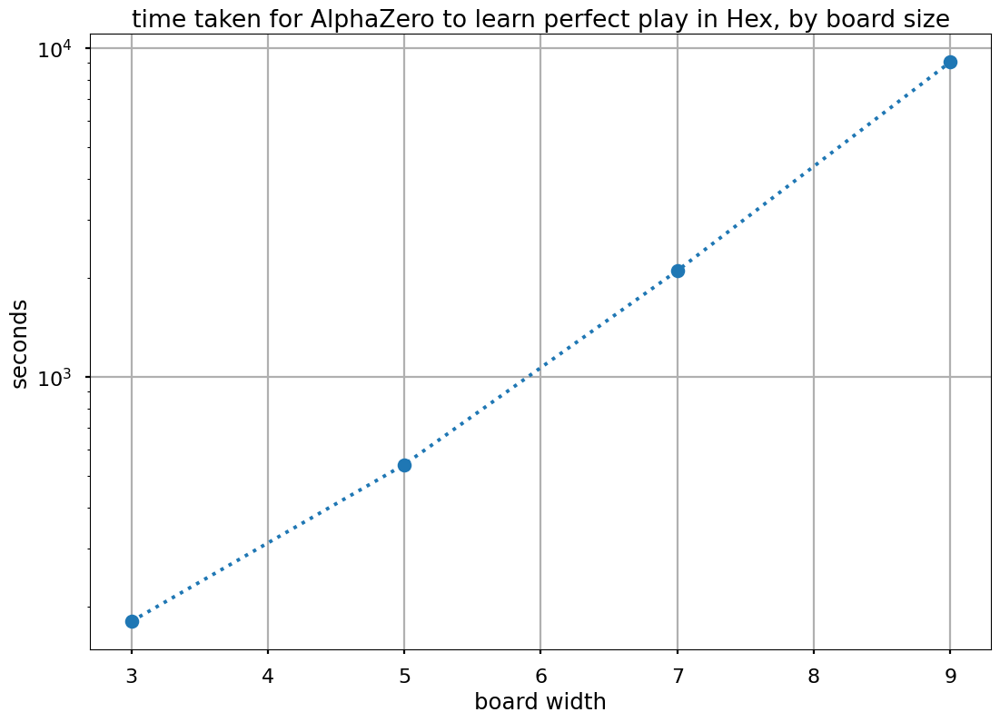

boardlaw¶
boardlaw is an ongoing research project into scaling laws in multiagent systems, as supported by Survival and Flourishing.
AlphaZero Implementation¶
Part of this project is a fast, low-resource AlphaZero implementation for small board games. Right now it can solve 9x9 Hex to perfect play in ~4 hours on a single RTX 2080 Ti.
{kind=link}
‘Perfect play’ is judged by ‘being on-par with MoHex’, which claims perfect play on boards up to size 9x9.
Because of the low-resource constraint, this implementation does a few things unusually:
The game - Hex - is vectorized and stepped entirely on the GPU. Playing random actions, the throughput is ~100m boards/second on a 16k vectorization. This is high enough that it forms a negligible part of the run time, even with very small networks.
The MCTS is vectorized and carried out entirely on the GPU too.
It leverages Monte-Carlo Tree Search as Regularized Policy Optimization to get away with doing ~64 sims compared to the usual ~800. It also subs out the bisection search recommended in the paper for a Newton solver, which is much faster.
It uses a minimal replay buffer of 64 steps, as repeated samples are bad for training speed (p55, 57)
It uses fully-connected resnets, as convnets seem to be overkill for boards this small.
It uses ReZero initialization to skip out on (slow, annoying) layernorms and batchnorms.
It uses a very small
c_puctof 1/16. This turned out to be unexpectedly critical; I don’t know whether it’s a consequence of the MCTS-as-regularized-tree-search, or if it reflects some other mistaken calculation elsewhere in my implementation.
There are intentionally no game-specific features: this is all intended as a tool for exploring the power of generic machine learning systems.
A lot of this is un-ablated as of mid-Jan, so take it with a pinch of salt when deciding where to attribute performance to.
ActiveElo¶
One frustration in writing this was in figuring out what pairs of agents should play against eachother to most rapidly nail down the Elo of a new agent. I eventually cracked and wrote activelo which uses a variational Bayes approach to suggest, based on the games played so far, which pair should be played next. It’s built using the superb geotorch constrained optimization toolkit.
Citations¶
@software{boardlaw,
author = {{Andy L Jones}},
title = {boardlaw},
url = {https://www.github.com/andyljones/boardlaw},
version = {0.0},
date = {2021-01-20},
}